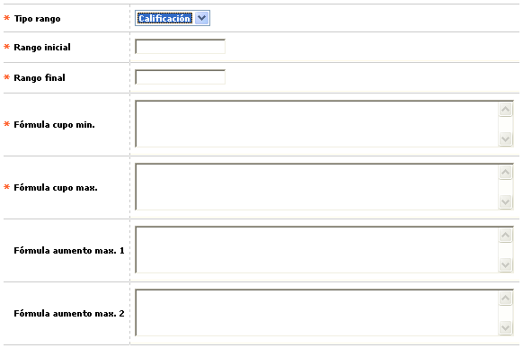
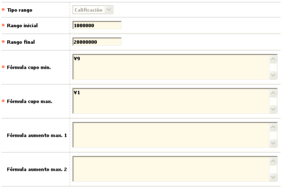

Parámetros solicitudes por producto
Copiar parámetros: Conjunto de campos en los que el sistema controla la asignación del cupo por tipo de solicitud. El sistema compara el valor obtenido como criterio A, criterio B y criterio C y asigna el menor de los tres.
El formulario contiene las opciones Actualizar, Eliminar, y Adicionar. Adicionalmente, cuenta con un botón en la parte superior para volver al formulario de Solicitudes.
Adicionar: Si el usuario invoca la opción Adicionar se despliega un formulario con los siguientes bloques:

Tipo rango |
Campo que posee lista de valores adjunta de la que debe seleccionarse entre Ingresos o Calificación la manera en que deben interpretarse los siguientes campos de Rango ini y Rango fin. |
Rango inicial |
En este campo numérico de 11 dígitos, obligatorio, debe ingresarse el valor inicial del rango bien sea de ingresos o de calificación por relación laboral obtenida. |
Rango final |
Campo numérico de 11 dígitos obligatorio en el que debe ingresarse el valor final del rango bien sea de ingresos o de calificación por relación laboral obtenida. |
Fórmula cupo mínimo |
En este campo se define la combinatoria u operaciones entre o con las variables del cupo que permiten determinar, por fórmula, el valor mínimo del cupo a otorgar. |
Fórmula cupo máximo |
Campo en el que se define la combinatoria u operaciones entre o con las variables del cupo que permiten determinar, por fórmula, el valor máximo del cupo a otorgar, en calidad de criterio A. |
Fórmula aumento máx1 |
En este campo se define la combinatoria u operaciones entre o con las variables del cupo que permiten determinar, por fórmula, el valor máximo del cupo a otorgar, en calidad de criterio B. |
Fórmula aumento máx2 |
Campo en el que se define la combinatoria u operaciones entre o con las variables del cupo que permiten determinar, por fórmula, el valor máximo del cupo a otorgar, en calidad de criterio C. |
Actualizar: Si el usuario invoca la opción Actualizar se despliega un nuevo formulario en el cual los únicos campos modificables son: Rango inicial, Rango final, Fórmula cupo mínimo, Fórmula cupo máximo, Fórmula aumento máx1, y Fórmula aumento máx2.

Solicitudes | Etapas | Cupos extendidos | Relaciones laborales| Copiar parámetros